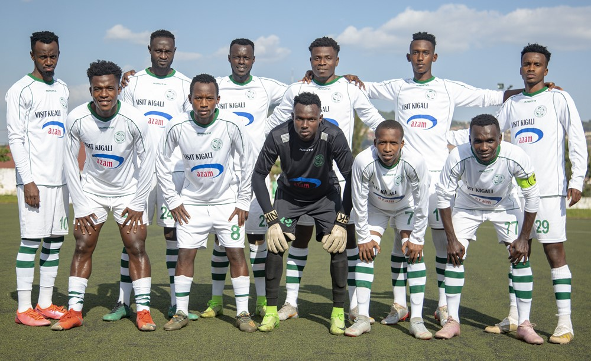

Amashirakinyoma ku mwuka mubi wavuzwe mu rwambariro rwa Kiyovu Sports
Nyuma y’ibyavuzwe ko mu rwambariro rwa Kiyovu Sports harimo umwuka utari mwiza ndetse ko hari abakinnyi bakomeje kugaragaza imyitwarire mibi, umutoza mukuru w’iyi kipe, Ndayiragije Etienne yavuze ko aya makuru nta shingiro afite.
Mu cyumweru gishize havuzwe amakuru atandukanye muri Kiyovu Sports ahanini ashingiye ku mwuka mubi wavuzwe mu rwambariro rw’iyi kipe yo ku Mumena.
Ni amakuru yashingirwaga ku musaruro mubi wa Kiyovu Sports watumye yisanga mu munani ari guhatanira kutajya mu cyiciro cya kabiri kandi iyi kipe yarashoye akayabo k’amafaranga ku isoko ryo kugura abakinnyi.
Aganira na IGIHE, Umutoza Mukuru wa Kiyovu Sports, Ndayiragije Etienne, yavuze ko ayo makuru yose ari ibihuha kandi atabivugaho.
Nyuma y’ibi kandi hari andi makuru yavuzwe ko umukinnyi Nyirinkindi Saleh yaba yaravuganye nabi n’abatoza be ndetse bikamuvirano guhabwa ibihano, ariko nabyo uyu mutoza yabinyomoje, cyane ko uyu musore yanabanje mu bakinnyi 11 batsinzwe na Musanze FC 2-1.
Ati “Kuba Saleh yabanje mu kibuga bisobanuye ko ibyamuvuzweho atari ukuri. Sinkunda gutinda ku bintu bidafite agaciro.“
Undi mukinnyi wavuzweho imyitwarire mibi muri iyi kipe, ni myugariro wo hagati, Mbogo Ally wanasohowe mu mwiherero w’aho ikipe icumbitse, kugeza igihe kitazwi.
Mu gihe gito amaze muri Kiyovu, Ndayiragije yishimira ko abakinnyi b’iyi kipe byibura bazi guhagarara neza mu kibuga ariko akanavuga ko hari ibindi byo gukosora bigihari kugira ngo ikipe yitware neza.